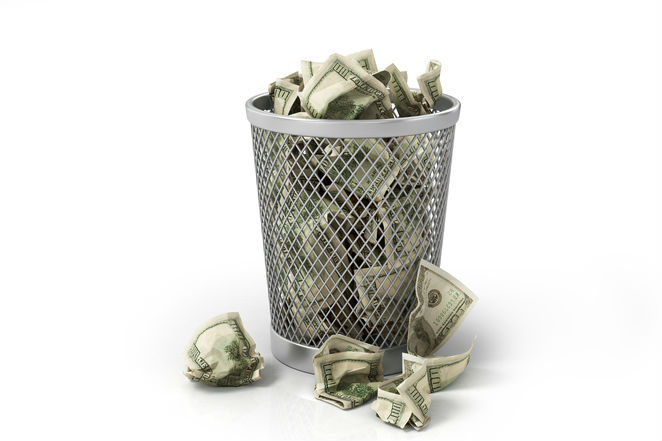
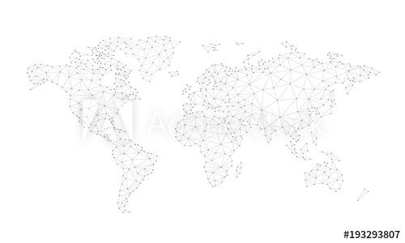
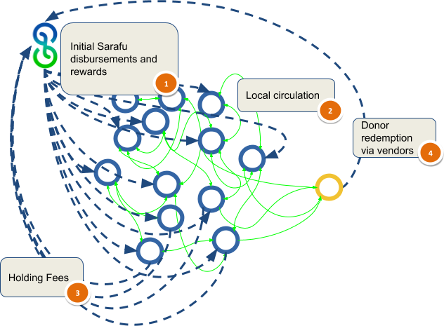
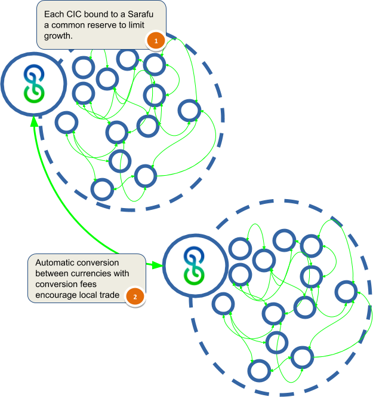

Network Integrity is Priceless
It is well know that - In a world where you can buy or sell anything - integrity is priceless. This is just as true when everything can be bought and sold in a community currency.
I’m often struck by the fundamental question:
What you are asking people to adopt with a community currency, really?
At the core of community currency is the golden rule:
You offer your goods and services as you would have others offer theirs. aka Pay it forward... aka Trust starts with you.... Wait, what?!
That alone sounds completely doomed to fail and here is why…..
The Currency Death Cycle (CDC):
- How could I offer my goods or services with a community currency as payment? I would loose goods and services and I don’t trust that I can spend the community currency again!
- No one will accept this community currency from me to purchase their goods and services ! Because they don't think they they will be able to spend it again and just loose their goods or services.
- How could I offer my goods or services with a community currency as payment? Because I would loose goods and services and I don’t trust that I can spend the community currency again!
- No one will accept this community currency from me to purchase their goods and services ! Because they don't think they they will be able to spend it again and just loose their goods or services.
- And so on…..
Each time a currency is denied acceptance, the CDC gets worse and worse – its circular reasoning leaves us all wanting, and unwilling to trade with each other – often even when we are cash poor. Whole markets can collapse because of the lack of a medium of exchange - specifically a TRUSTED medium of exchange. Generally that trust must originate somewhere else, with a king, or a central bank. Note that many a community currency has fallen to the CDC.
While the Golden Rule might be enough to withstand a mild CDC in some small communities, there must be some foundational golden nugget for a community currency:
Establishing trust in redemption at the full value it was received.
This brings us to national currencies and our current default State of Trust on State (SOTOS):
“At least if I hold National Currency I know I can pay for what I need.”
This default state (SOTOS) that we all live in, effectively nullifies the CDC for a national currency because people KNOW they can spend it again - Unless things go really wrong (like in Zimbabwe.... and I hope not the rest of the world soon.)
A fundamental question a community currency must try to answer is:
How can we create economies, flows and reciprocity without falling into the CDC – without relying solely on government or banks (SOTOS)?
By far the simplest idea is the concept of a voucher. Rather than the State vouching for a currencies redeem-ability – why not a business?
Canadian Tire Money – are denominated vouchers issued by a tire company which accepts them back at face value to the Canadian Dollar for tires. It’s quite simple and they have been in small circulation for decades.
In Kenya – chamas (such as farmer’s savings groups) can issue a voucher for food they produce and accept it back at face value to Kenyan shillings.
In this case the issuer of the voucher is the entity you trust. If they refuse it, you could seek legal support from the local government, elders, chief etc. Generally vouchers are governed by contract law as promissory notes.
How could a voucher like Canadian Tire Money enter general circulation? If I have a tire voucher, can I buy food with it? - Why not, assuming the food seller accepts? If food seller re-spent that voucher later on labor - can it then be redeemed for food? - While not obligated to do so - you might imagine she would have, given she took it in the first place.
But as the voucher starts to circulate farther and farther from people who want tires or even know of the Canadian Tire Company it would start to feel the CDC more and more. :(
What if, as the voucher entered certain jurisdictions or communities it could be converted into other local vouchers? In other words, what if the food seller could convert the tire voucher into a food voucher – when redeeming it / selling it for other goods and services? - Hence at that point they could choose to make it their own voucher.
This choice could be made automatic – even mandatory in some networks:
Hence if you accept a tire voucher for payment and redeem it for anything but a tire, then it becomes your voucher and you should redeem it again yourself. But how much are Tire vouchers worth compared to food vouchers? For this conversion to take place, you would need some higher form of Trust, that would establish the relative value of the two vouchers.
But how much are Tire vouchers worth compared to food vouchers? For this conversion to take place, you would need some higher form of Trust, that would establish the relative value of the two vouchers.
Here we enter blockchain decentralized infrastructure and blockchain based transparent and immutable contracts as solutions to scaling trust through trustless / formulaic systems.
While Canadian Tire Money and the Farmers’ Food vouchers could be great by themselves – in-order to scale without suffering from CDC – they need to be bounded in supply and convertible without a middle man to other vouchers . If we were to apply this binding to syntropic principals for currencies, it would fit under Management: Ensure that the growth of a Community Currency is clearly bounded and its supply and value can’t keep growing forever.
If the tire voucher issuers wanted to ensure that their vouchers would be convertible to other vouchers there would need to be some point of relative value. Well, this is the perfect use case for a blockchain contract. The contract could transparently establish that for each tire voucher there is an amount of reserve. This reserve could be anything the issuer chose, such as a US dollar stable token.
Say that for every tire voucher there is 1:1 backing with Canadian Dollars and if the food voucher we’re similarly backed 1:1 by the same reserve then the relative value of each would be the Reserve over Voucher Supply and they would have equal value to each other. ( P = Reserve / Voucher_Supply = 1 )
But if the food voucher was only partially backed say 50% backed by Canadian Dollars then it would have less value than the tire voucher. Hence 1 Tire voucher would be worth 2 Food vouchers.
By backing in National Currency we have not saved ourselves from the problem of excessive SOTOS – (our State of Trust on State). But what if instead of a national currency we created or chose a trusted network token with no intrinsic value to national currency, but rather other goods and services? Such a Network Token could be created by a non-profit foundation that seeks to help communities in need. This Network token would be a pivoting point for establishing relative value between all the vouchers that use it as a reserve. This is what we have in Kenya with Sarafu as our network token.
The means that the trust established by the tire voucher issuer can now be transferred to the food voucher issuer. In other words, since both the the food voucher and the tire voucher can be converted to their reserve in Sarafu – their value can be known automatically and they can be accepted anywhere that uses Sarafu. Hence Sarafu as a network token becomes an agreement between voucher issuers.
In this case Sarafu is a bootstrap in Kenya. If businesses can accept Sarafu then they can all begin to accept their vouchers from each other – as they are all convertible.
You might object and say – “you have merely delayed the CDC (Currency Death Cycle)” but perhaps not - as long as Sarafu is redeemable for something some of the network needs over time. If Sarafu is backed only by National Currency (with occasional buy outs) we are still in SOTOS, but what if such a network token like Sarafu could be backed by the flour from a large maize mill – or even another voucher like Canadian Tire Money themselves.
Here today in Kenya we have 16 Million Sarafu network tokens,that has been distributed freely into a population of 40,000 Kenyan farmers, shop keepers, schools and so on. With occasional purchases of Sarafu from donors and the development of cooperative businesses that act as backing. Communities are getting ready now to take the Sarafu they are using and lock it into a contract (like the Bancor Protocol) on a blockchain which will then mint their own voucher (token, Community Inclusion Currency).
Groups of women farmers, shop keepers, teachers and so on in chamas have come together and planned to issue a voucher for their specific goods and services – signed and approved by local authorities – and backed with a reserve of Sarafu; Once the social and blockchain contracts are signed, then they can spend those vouchers in another village where people can convert them to their own vouchers (via Sarafu as a Network Token). Because of the commitment to redeem their own vouchers and their relative value to Sarafu, which is the reserve in all the CICs in villages around them – there can be a state of mutual trust and avoidance of the Currency Death Cycle (CDC) beyond the sole State of Trust of State (SOTOS). The concept here is a community of currencies providing a network of stability - or Canadian Tire Money like vouchers multiplied by the number of businesses and chamas across Kenya that see value in issuing their own credit while lacking Kenyan Shilllings.
In a world where you can buy or sell anything with community currency – Network Integrity is Priceless.
Hence a trusted Network token that holds together various community currencies is extremely important. Note that nation states like Kenya could and should enable a decentralized value driven economy to form themselves and spread it by issuing their own Central Bank Digital Currencies that could be used as reserves and Network Tokens. But we can’t wait for that to happen and even then, we don't want to be in excess SOTOS.
Let’s enable credit creation by the masses – just as Canadian Tire Money has shown us – but do it on a public ledger (blockchain) using Network Tokens to link all these vouchers together into a decentralized economy based on real value. Someday there will be open competition and collaboration among Network Tokens to cover all that we want to value.
Bootstrapping such a decentralized grassroots economy is not only possible, it needs to happen. The cost of rehabilitating our soils, feeding and educating the masses, and fulfilling all the SDGs has no budget on this planet!